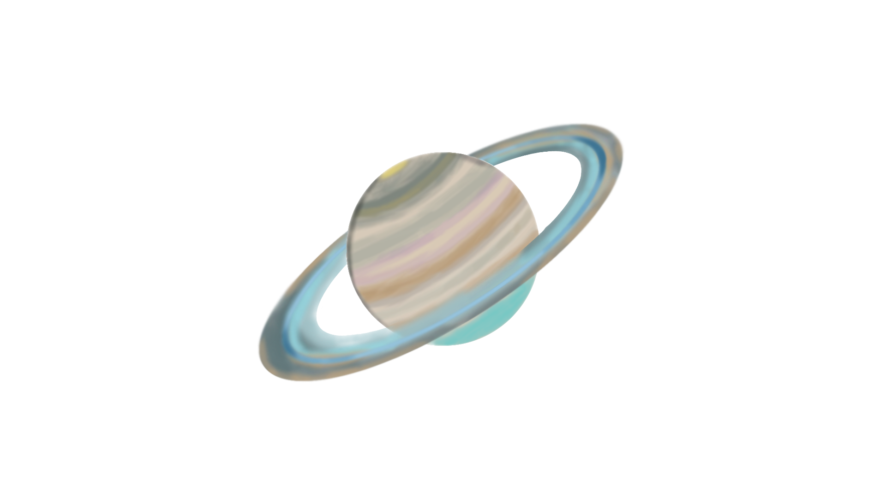

Discover the Moons of Saturn!
Saturn, the 6th planet from the sun, is probably most famous for its rings.
Saturn has an orbital period of nearly 30 years, meaning it will orbit the Sun once every 29.5 years. It is nearly 95 times the mass of Earth and is a gas giant of mostly hydrogen and helium. It has an average distance of approximiately 9 astronomical units (1 AU is the average distance between the Earth and the Sun). Despite Saturn having 95 times the mass of the Earth, it's gravity is only slightly more than Earth's.
As meantioned earlier, Saturn's Rings are probably the most known feature of the gas giant. The rings are the largest in the solar system and are primarily made of ice and rock. The rings are divided into the following groups (ordered from inside to outside):
- D-Ring
- C-Ring
- B-Ring
- A-Ring
- F-Ring
- G-Ring
- E-Ring
- Phoebe Ring
Saturn has been "visited" by probes multiple times between 1979 and 2017. This first of which was by the Pioneer 11. Most recently, it was visited by the Cassini. During Cassini's mission, it spent 13 years orbiting the ringed planet and it ended it's orbit by plunging itself directly into Saturn's atmosphere! How Exciting!
Saturn also has some of the most interesting moons in our Solar System:
Please complete the form below to request additional information or to contact us and we'll get back to you!